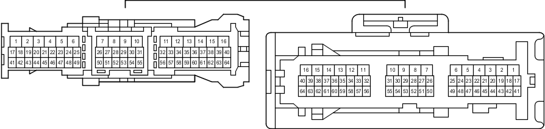

Наименование
Жгут проводов панели приборов и напольный жгут проводов (боковая панель с правой стороны кожуха)
Код
GQ1
Каталожный номер
90980-12774/90980-12798
Цвет
Белый
Технические характеристики

Расположение
Электропроводка в панели приборов (для моделей с левосторонним рулевым управлением) 1
Электропроводка в панели приборов (для моделей с правосторонним рулевым управлением) 1
Система
Система кондиционирования
Аудиосистема (6-канальная, для моделей без системы навигации)
Аудиосистема (9-канальная, для моделей без системы навигации)
Аудиосистема (для моделей с системой навигации)
Система автоматического управления освещением
Фонари заднего хода
Щиток приборов (для моделей с левосторонним рулевым управлением)
Щиток приборов (для моделей с правосторонним рулевым управлением)
Система управления замками дверей
Система двойной блокировки (для моделей с левосторонним рулевым управлением)
Система двойной блокировки (для моделей с правосторонним рулевым управлением)
Иммобилайзер двигателя (для моделей с системой посадки и запуска)
Система посадки и запуска
Механизм открывания защелки стекла
Точки соединения с массой
Освещение
Освещение салона
Система предупреждения об оставлении ключа в замке зажигания (для моделей без системы посадки и запуска)
Система автоматического выключения освещения
Система оповещения о невыключенном освещении
Многофункциональный дисплей
Монитор "Multi-Terrain" (для моделей с системой навигации)
Монитор "Multi-Terrain" (для моделей без системы навигации)
Мультиплексная система передачи данных (CAN, для моделей с правосторонним рулевым управлением)
Система навигации
Система помощи при парковке (монитор помощи при парковке / монитор заднего вида и монитор переднего и бокового вида с широкими углами обзора) (для моделей с системой навигации)
Система помощи при парковке (монитор заднего вида и монитор переднего и бокового вида с широкими углами обзора) (для моделей без системы навигации)
Система помощи при парковке (сенсорная система помощи при парковке TOYOTA) (с 8 датчиками, для моделей с системой навигации)
Система помощи при парковке (сенсорная система помощи при парковке TOYOTA) (с 8 датчиками, для моделей без системы навигации и с многофункциональным дисплеем)
Силовая розетка (220 В)
Заднее сиденье № 2 с электроприводом и функцией складывания
Сиденье с электроприводом (сиденье переднего пассажира в моделях с левосторонним рулевым управлением)
Сиденье с электроприводом (сиденье водителя в моделях с правосторонним рулевым управлением и функцией сохранения положения сиденья)
Электрические стеклоподъемники (для моделей с левосторонним рулевым управлением)
Предаварийная система безопасности
Задние стеклоочиститель и стеклоомыватель (для моделей с левосторонним рулевым управлением)
Задние стеклоочиститель и стеклоомыватель (для моделей с правосторонним рулевым управлением)
SRS (для моделей с подушками безопасности занавесочного типа)
Система предупреждения о непристегнутом ремне безопасности
Подогреватели сидений
Система запуска (для моделей с системой посадки и запуска)
Система блокировки рулевого управления (для моделей с системой посадки и запуска)
Задние фонари
Противоугонная система
Сцепное устройство для прицепа
Система дистанционной блокировки дверей (для моделей с системой посадки и запуска)
Система дистанционной блокировки дверей (для моделей без системы посадки и запуска)